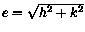

The main choices involved in the design of the output are: the coodinate type, system, and reference; the filter decimation; and the most critical parameter of them all, the quantity of output.
The choices of coordynate types and systems are described in the comment on top of coord.f; at present, you can get output in cartesian coordinates (CAR), keplerian elements (KEP) and equinoctal non singular elements (EQU), the latter as defined by Broucke and Cefola (1982). Parabolic and hyperbolic elements are not currently supported. To add a new option, modify coocha in coord.f. The coordynate systems available are currently heliocentric (HEL), jacobian (JAC), barycentric (BAR) and heliocentric canonical (HEC). The reference systems are mean ecliptic of B1950.0 (ECLM50), mean equator of B1950.0 (EQUM50), mean equator of J2000.0 (EQUM00), mean ecliptic of J2000.0 (ECLM00), invariable plane of the outer solar system according to LONGSTOP 1B (INVL1B); in the first four cases, the x axis is defined by the corresponding mean gamma point. New reference systems can be added by modifying refer in coord.f. There is also a choice for the units to be used for the angle variables, between radiants (RAD), degrees (DEG) and revolutions (REV). Warning: these units also apply to the inclination in keplerian variables, although the inclination is not an angle variable.
Not all these choices are available directly in the orbit9 output, which is always EQU RAD; the output has to be converted by running Conv9. The options for Conv9 can be provided in the file conv9.inp, as well as interactively; the result is always a number of files, each containing the data on a single orbit, with or without header, and in the required coordynate system, reference system, etc.
On the contrary, digital filtering has to be performed on line, because post-filtering of the output (e.g. from within Giffv) does not produce the same effect. To understand this fully, you should read the filtering manual which is in the doc directory and/or Carpino, Milani and Nobili (1987). In short, the filter is capable of removing the oscillations with periods between 2*dt/isamp and 2*dt, but may not remove the ones with periods shorter than 2*dt/isamp; some of these, as a result of sampling with interval dt/isamp, can generate aliases with comparatively long periods, which could well escape the filtering. To make all this understandable by the novice user, let us take an example: suppose that dt=100 and isamp=100; then an oscillation with a period of 1.001 years, sampled at 1 year interval, will appear at the filter input as an oscillation with a period of 1,000 years, and it will be preserved in the output. To correctly filter out the short period effects, we need on the contrary to make sure that no significant effect occurs with a period shorter than 2 years, or at least not with periods close to 1 year, 1/2 year, 1/3 year, etc.
Another pitifall of digital filtering is avoided by remembering that any nonlinear transformation changes the spectrum of a function; as a simple example, if the equinoctal variables h,k contain the frequencies , the eccentricity contains the difference frequencies . As long as all these are slow frequencyes, there is no problem; however, the difference of two fast frequencies can be a slow frequency, thus filtering e and filtering h.k does not give the same result; in orbit9 the filter is always applied to the equinoctal elements. Another example of this can be obtained by filtering the orbital elements in jacobian coordinates, then converting them to heliocentric coordinates: in the filtered jacobian output the short periodic perturbations are removed, but in the heliocentric transformation they appear again, because it is the transformation between jacobian and heliocentric coordinates which contains most of the short periodic effects (mostly through the motion of the Sun).
Thus you need to decide before performing a long integration which coordinate system is going to be used in the analysis of the output, which is the range of short periodic perturbations which you want to remove by filtering, and which is the band of interest, that is, which frequencies have to be preserved. This is needed not only for the filter, but also for the determination of frequencies and to maintain the revolution counters. As an example, if the output is transformed in keplerian coordinates, the number of revolutions of the perihelion and of the node can be computed correctly if and only if these two angles never change by more than in the interval dt. If this is done correctly, then the frequency of the perihelion can be obtained by a linear fit (a menu choice in GIFFv); otherwise there could be a significant problem in reconstructing the frequency. Thus the filter output interval must be longer than the longest short period to be removed and shorter than half the shortest long period to be studied. As an example, isamp=50 and dt=50 is good for the orbit of a Trojan asteroid computed without the inner planets (but do not forget the barycentric correction!) because the oscillations with period close to the libration period ( years) are preserved and the short periodic perturbations with periods of the order of 1 year are negligible. However, the other constraint, that is the size of the output, has to be taken into account, since an integration for 1 million years with the above parameters results in 20,001 output data points and roughly 4 Megabytes per asteroid.
In practice, not even I am able to make all these choices right at the first attempt; given a dynamical problem, some test integrations and their analysis (e.g. with GIFFv) are required to understand the basic spectrum and to choose the parameters for a longer integration.